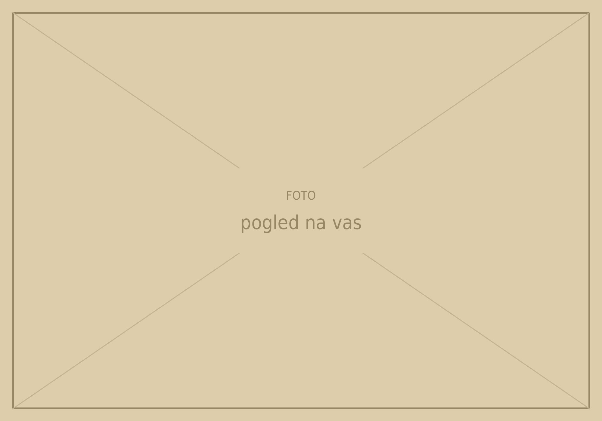
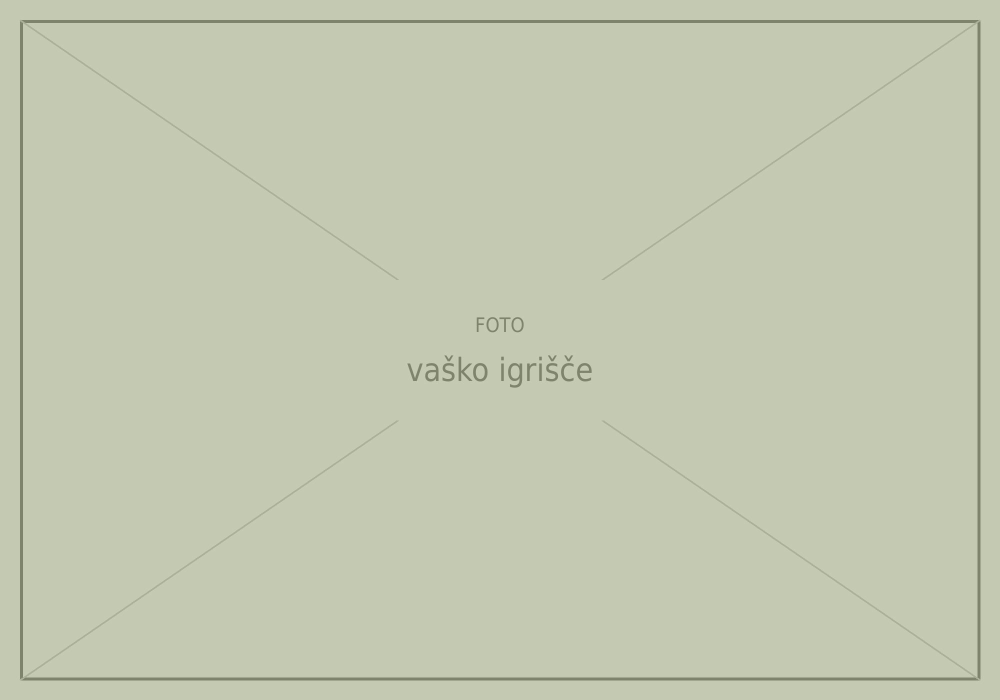

Vas na griču
Grič pri Dobličah leži v Beli krajini, jugozahodno od Dobličev, v občini Črnomelj. Je ena od sedmih vasi krajevne skupnosti Dobliče; leta 2020 je v njej živelo 83 prebivalcev.
Vas ima svoje športno društvo z asfaltnim igriščem in lasten vodovod s hidrantnim omrežjem. Kar vaščani zmorejo sami, naredijo skupaj.
✎ Dopolni: nekaj stavkov o tem, kakšna je vas danes in kdo so njeni ljudje.